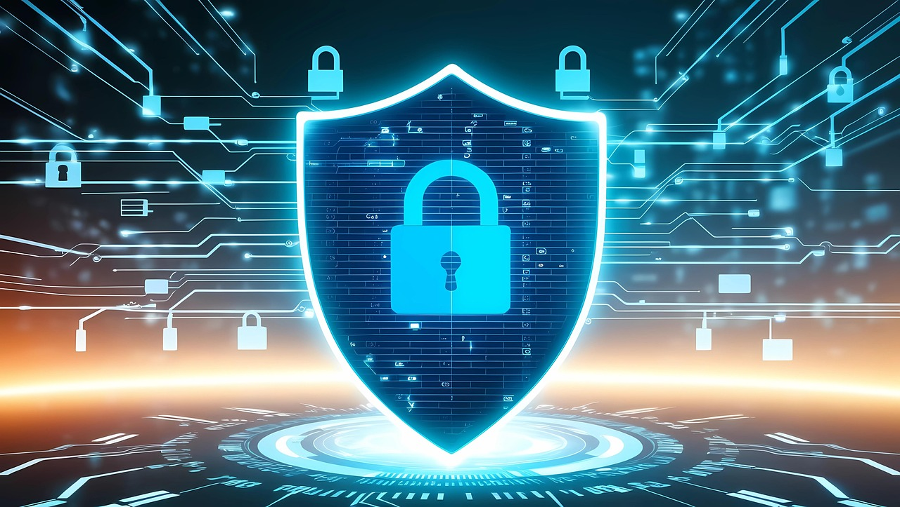

This website explores foundational cybersecurity concepts with a focus on Security Operations Center (SOC) roles and responsibilities. It brings together technical skills, tools, lab-based learning, and industry references to provide an overview of what it means to work in a SOC environment and how entry-level analysts support organizational security.
Foundations of Cyber Defense

Modern organizations rely on continuous monitoring and proactive defense strategies to protect sensitive information and maintain operational stability.
Security Operations Centers play a critical role in identifying emerging threats, reducing risk, and supporting overall cybersecurity posture. As cyber threats continue to evolve, structured security operations are essential for organizational resilience.